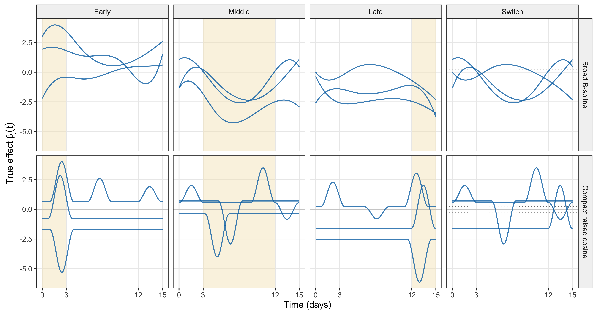
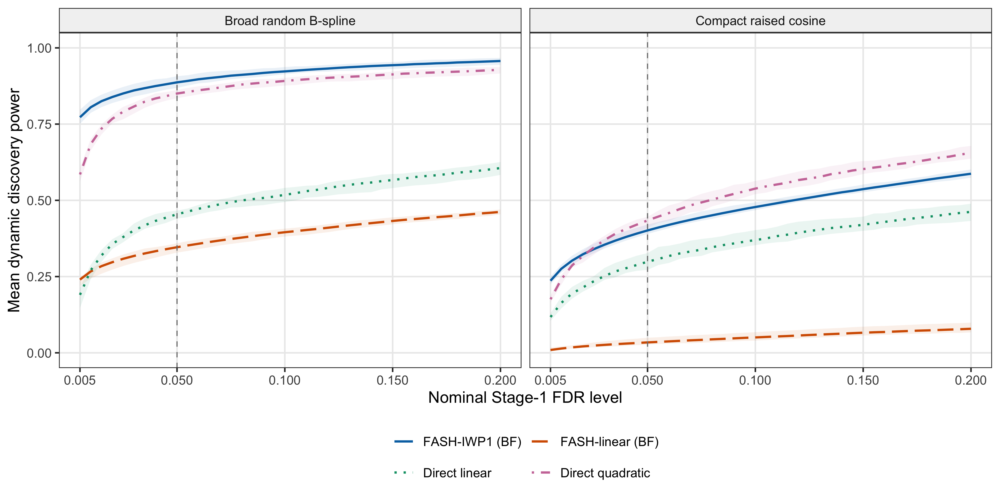
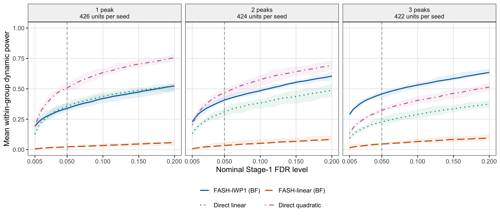
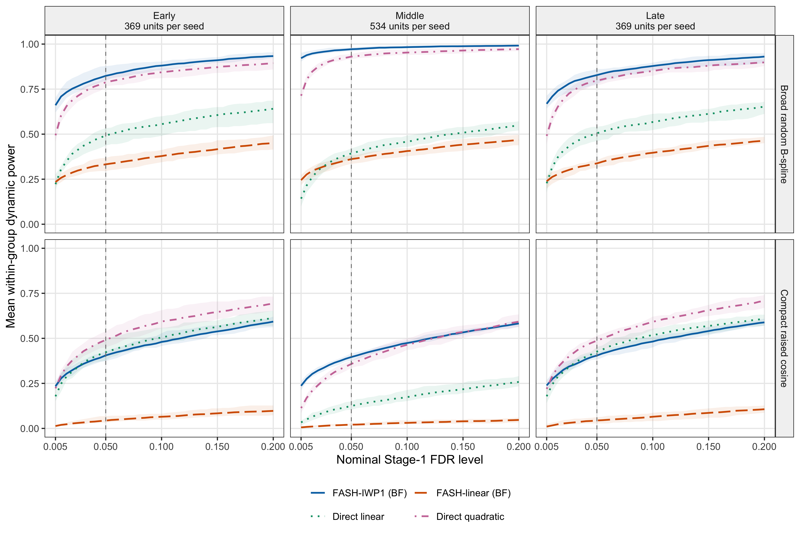
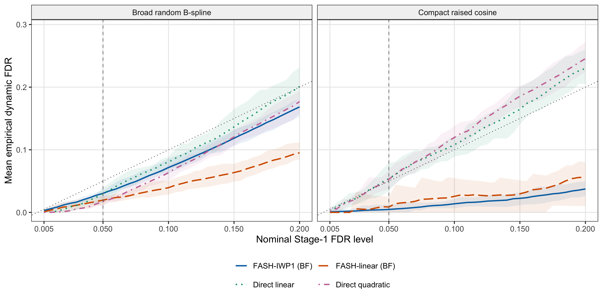

Last updated: 2026-09-18
Checks: 7 0
Knit directory: coderepo-local/
This reproducible R Markdown analysis was created with workflowr (version 1.7.2). The Checks tab describes the reproducibility checks that were applied when the results were created. The Past versions tab lists the development history.
Great! Since the R Markdown file has been committed to the Git repository, you know the exact version of the code that produced these results.
Great job! The global environment was empty. Objects defined in the global environment can affect the analysis in your R Markdown file in unknown ways. For reproduciblity it’s best to always run the code in an empty environment.
The command set.seed(20251109) was run prior to running
the code in the R Markdown file. Setting a seed ensures that any results
that rely on randomness, e.g. subsampling or permutations, are
reproducible.
Great job! Recording the operating system, R version, and package versions is critical for reproducibility.
Nice! There were no cached chunks for this analysis, so you can be confident that you successfully produced the results during this run.
Great job! Using relative paths to the files within your workflowr project makes it easier to run your code on other machines.
Great! You are using Git for version control. Tracking code development and connecting the code version to the results is critical for reproducibility.
The results in this page were generated with repository version 98996f5. See the Past versions tab to see a history of the changes made to the R Markdown and HTML files.
Note that you need to be careful to ensure that all relevant files for
the analysis have been committed to Git prior to generating the results
(you can use wflow_publish or
wflow_git_commit). workflowr only checks the R Markdown
file, but you know if there are other scripts or data files that it
depends on. Below is the status of the Git repository when the results
were generated:
Ignored files:
Ignored: .DS_Store
Ignored: .Rhistory
Ignored: .Rproj.user/
Ignored: Rplots.pdf
Ignored: analysis/.DS_Store
Ignored: analysis/.Rhistory
Ignored: code/.DS_Store
Ignored: code/.Rhistory
Ignored: code/revision_simulations/.DS_Store
Ignored: data/appendixB/
Ignored: data/dynamic_eQTL_real/
Ignored: data/revision_simulations/
Ignored: data/toy_example/
Ignored: output/dynamic_eQTL_real/
Ignored: output/pdf/
Ignored: output/playwright/
Ignored: output/revision_simulations/
Ignored: scripts/
Untracked files:
Untracked: analysis/revision_internal_r3_two_stage_functional_testing.rmd
Untracked: code/revision_simulations/internal/per_unit_enhancer_enrichment/
Untracked: code/revision_simulations/internal/per_unit_expression_correlation/compare_corshrink_versions.R
Untracked: code/revision_simulations/internal/per_unit_expression_correlation/diagnose_discordant_calls.R
Untracked: code/revision_simulations/internal/per_unit_expression_correlation/diagnose_smooth_mismatch.R
Untracked: code/revision_simulations/internal/per_unit_expression_correlation/extract_perunit_lfdr.R
Untracked: code/revision_simulations/internal/per_unit_expression_correlation/plot_call_venns.R
Untracked: code/revision_simulations/internal/per_unit_expression_correlation/plot_class_variograms.R
Untracked: code/revision_simulations/internal/per_unit_expression_correlation/plot_corshrink_result.R
Untracked: code/revision_simulations/internal/per_unit_expression_correlation/plot_corshrink_versions.R
Untracked: code/revision_simulations/internal/per_unit_expression_correlation/plot_cs_vs_diagonal.R
Untracked: code/revision_simulations/internal/per_unit_expression_correlation/plot_day0_day1_distribution.R
Untracked: code/revision_simulations/internal/per_unit_expression_correlation/plot_mechanism_summary.R
Untracked: code/revision_simulations/internal/per_unit_expression_correlation/plot_perunit_variogram.R
Untracked: code/revision_simulations/internal/per_unit_expression_correlation/plot_strober_concordance.R
Untracked: code/revision_simulations/internal/per_unit_expression_correlation/plot_three_models.R
Untracked: code/revision_simulations/internal/per_unit_expression_correlation/prepare_reference_sets.R
Untracked: code/revision_simulations/internal/per_unit_expression_correlation/prototype_corshrink.R
Untracked: code/revision_simulations/internal/per_unit_expression_correlation/recover_design_factor.R
Untracked: code/revision_simulations/internal/per_unit_expression_correlation/test_corshrink_reimplementation.R
Note that any generated files, e.g. HTML, png, CSS, etc., are not included in this status report because it is ok for generated content to have uncommitted changes.
These are the previous versions of the repository in which changes were
made to the R Markdown
(analysis/revision_functional_testing_simulation.rmd) and
HTML (docs/revision_functional_testing_simulation.html)
files. If you’ve configured a remote Git repository (see
?wflow_git_remote), click on the hyperlinks in the table
below to view the files as they were in that past version.
| File | Version | Author | Date | Message |
|---|---|---|---|---|
| Rmd | 98996f5 | Ziang Zhang | 2026-09-18 | Consolidate R1 and R2 into paired two-stage R3 analysis |
| Rmd | dfc83f0 | Ziang Zhang | 2026-08-29 | Promote canonical R3 temporal-mixture analysis |
| html | dfc83f0 | Ziang Zhang | 2026-08-29 | Promote canonical R3 temporal-mixture analysis |
| Rmd | cc95532 | Ziang Zhang | 2026-08-27 | Refresh revision workflows and rendered analyses |
| html | cc95532 | Ziang Zhang | 2026-08-27 | Refresh revision workflows and rendered analyses |
| Rmd | 09f63bc | Ziang Zhang | 2026-08-24 | Sync revision analyses and rendered pages |
| html | 09f63bc | Ziang Zhang | 2026-08-24 | Sync revision analyses and rendered pages |
| Rmd | c87957a | Ziang Zhang | 2026-08-10 | Add revision analyses: R1-R6 reviewer-facing pages and internal studies |
| html | c87957a | Ziang Zhang | 2026-08-10 | Add revision analyses: R1-R6 reviewer-facing pages and internal studies |
This simulation evaluates dynamic eQTL screening followed by temporal classification. It uses ten Monte Carlo seeds and two truth mechanisms: broad random B-spline trajectories and compact raised-cosine trajectories. The analysis proceeds in two stages:
0.005 through 0.20,
using all 6,362 units.For donor \(i\), unit \(j\), and observed time \(t\),
\[ Y_{ijt}=\alpha_{jt}+G_{ij}\beta_j(t)+X_i^T\gamma_{jt}+\epsilon_{ijt}, \qquad \epsilon_{ijt}\sim N(0,1). \]
For each seed, one tested cis variant is sampled uniformly for each
of the 6,362 tested genes, and its YRI dosage vector is
retained for the same 19 donors. Each replicate has
16 time points and five standardized covariates. Per-time
regressions include an intercept, genotype, and five covariates; their
t-adjusted standard errors use 12 residual degrees of freedom. The
dynamic, constant, and zero-effect counts are exactly
1,272/2,545/2,545, with truth classes balanced across
empirical-MAF deciles.
The dynamic effects have Early/Middle/Late probabilities
0.29/0.42/0.29. Switch status is balanced within each
location, giving six exact cell counts
185/184/267/267/185/184. The final trajectory, including
its random genetic main effect, must satisfy the assigned location and
Switch margins. Early is \(t\leq3\),
Middle is \(3<t<12\), and Late is
\(t\geq12\) on the dense 0.1-day grid;
Switch uses threshold 0.25. The two mechanisms retain the same truth
contract:
Figure 1 shows three stored true \(\beta_j(t)\) curves per category from seed
12345, including the genetic main effect. Examples are
selected in unit order within the retained illustration pool, without
filtering on discoveries. Early, Middle, and Late refer to the location
of the largest absolute effect; Switch requires both positive and
negative effects beyond \(\pm0.25\) and
can overlap any of the three temporal categories.
# Select true category members from the validated seed-12345 illustration pool.
example_members <- unique(truth_example_pool[
truth_example_pool$true_functional > 0,
c("truth_mechanism", "target", "unit_index", "pair_key")
])
example_members <- example_members[order(example_members$unit_index), ]
selected_examples <- do.call(rbind, lapply(
split(example_members, interaction(example_members$truth_mechanism,
example_members$target, drop = TRUE)),
function(members) head(members, 3L)
))
stopifnot(nrow(selected_examples) == 24L)
example_curves <- merge(truth_example_pool, selected_examples,
by = c("truth_mechanism", "target", "unit_index", "pair_key"), sort = FALSE)
example_curves$category <- factor(example_curves$target,
levels = c("early", "middle", "late", "switch"),
labels = c("Early", "Middle", "Late", "Switch"))
example_curves$mechanism <- factor(example_curves$truth_mechanism,
levels = c("random_bspline", "raised_cosine"),
labels = c("Broad B-spline", "Compact raised cosine"))
stopifnot(!anyNA(example_curves$category), !anyNA(example_curves$mechanism),
nrow(example_curves) == 24L * 151L)
windows <- data.frame(category = factor(c("Early", "Middle", "Late"),
levels = levels(example_curves$category)), start = c(0, 3, 12), end = c(3, 12, 15))
switch_reference <- data.frame(category = factor("Switch",
levels = levels(example_curves$category)), threshold = c(-0.25, 0.25))
# Plot the saved dense true beta(t), with a common y scale across all panels.
ggplot2::ggplot(example_curves, ggplot2::aes(time, true_effect, group = pair_key)) +
ggplot2::geom_rect(data = windows, ggplot2::aes(xmin = start, xmax = end,
ymin = -Inf, ymax = Inf), inherit.aes = FALSE, fill = "#F5E6BF", alpha = 0.45) +
ggplot2::geom_hline(yintercept = 0, color = "grey65", linewidth = 0.3) +
ggplot2::geom_hline(data = switch_reference, ggplot2::aes(yintercept = threshold),
linetype = "dotted", color = "grey45", linewidth = 0.4) +
ggplot2::geom_line(color = "#0072B2", alpha = 0.8, linewidth = 0.65) +
ggplot2::facet_grid(mechanism ~ category) +
ggplot2::scale_x_continuous(breaks = c(0, 3, 12, 15)) +
ggplot2::labs(x = "Time (days)", y = expression("True effect " * beta[j](t))) +
ggplot2::theme_bw(base_size = 12) +
ggplot2::theme(panel.grid.minor = ggplot2::element_blank(),
strip.background = ggplot2::element_rect(fill = "grey95"))
Figure 1. Examples of true effect curves under broad random B-spline (top) and compact raised-cosine (bottom) truth. Each panel contains three examples with positive values of its defining functional. Shading marks the Early, Middle, or Late time window; dotted horizontal lines in Switch panels mark +/-0.25. All panels share the same effect scale. Curves may appear in both a temporal panel and the Switch panel.
FASH-IWP1 and FASH-linear share the unrestricted constant null, the
one-day predictive-SD grid (zero plus 51 positive values from \(\exp(-5)\) to 1), and
penalty = 10. FASH-linear uses a finite mixture of Gaussian
linear slopes. Both fits use the pinned BF update, which retains the
conditional alternative mixture and updates its total weight against the
constant null.
The direct linear LRT tests the genotype-by-time term; the quadratic LRT jointly tests the linear and quadratic interaction terms. Their eFDR uses 100 donor-level permutations, with expression trajectories and covariates permuted together relative to genotype. The direct tests are supplied with the true \(\pi_0=5090/6362\); FASH estimates its null weight. All methods use the same simulated data. FASH receives per-time regression summaries, while the direct tests receive individual-level data.
Let \(D_m(\alpha)\) be the discoveries for method \(m\). FASH uses cumulative mean lfdr, and direct tests use monotone permutation eFDR q-values. For each replicate,
\[ \mathrm{Power}_m(\alpha)=\frac{|D_m(\alpha)\cap H_1|}{|H_1|}, \qquad \mathrm{FDP}_m(\alpha)= \frac{|D_m(\alpha)\cap H_0|}{\max\{|D_m(\alpha)|,1\}}. \]
The curves show the ten-seed means of power and FDP (empirical FDR). Ribbons are pointwise replicate minima and maxima. Each panel is one truth mechanism; the vertical line marks \(\alpha=0.05\), and the FDR diagonal marks nominal calibration. Both FASH methods also retain Raw results in the cache for later Raw-versus-BF comparisons.
# FASH: rank all-unit lfdr values and select by their cumulative mean.
lfdr_order <- order(lfdr, unit_index)
fdr <- cumsum(lfdr[lfdr_order]) / seq_along(lfdr_order)
fash_calls <- lfdr_order[fdr <= alpha]
# Direct LRTs: apply the same donor permutations to both interaction degrees.
permutation_null <- compute_direct_interaction_permutation_null(
out = individual_level_data,
n_permutations = 100L,
interaction_degrees = c(1L, 2L),
seed = seed + 10000L,
permute_covariates_with_expression = TRUE,
num_cores = num_cores
)
direct_qvalues <- empirical_fdr_qvalues(
observed_pvalues = observed_lrt$pvalue,
null_pvalues = as.vector(permutation_null$null_pvalues[[degree_label]]),
pi0_method = "fixed",
fixed_pi0 = 5090 / 6362
)$qvalue
direct_calls <- which(direct_qvalues <= alpha)# Select the four main-comparison methods; Raw FASH results remain in the cache.
power_curves <- stage1_summary[
stage1_summary$method %in% report$contract$display_methods,
c("truth_mechanism", "method", "alpha", "mean_power", "power_min", "power_max")
]
power_curves <- power_curves[order(
power_curves$truth_mechanism,
match(power_curves$method, report$contract$display_methods),
power_curves$alpha
), ]
r3c_plot_stage1(power_curves, metric = "power")
Figure 2. Dynamic discovery power for BF-adjusted FASH-IWP1, BF-adjusted FASH-linear, and direct linear and quadratic interaction tests. Panels show broad random B-spline and compact raised-cosine truth; curves are ten-seed means and ribbons are pointwise replicate minima and maxima. Direct-test eFDR uses the true null proportion and 100 donor permutations.
We split the compact-truth power comparison by the number of generating raised-cosine peaks. For each seed and group, power is the fraction of that group’s true dynamic units selected using the original global method scores and thresholds. The three strata exhaust the dynamic units; curves average these within-group powers across the same ten seeds. Each replicate contains 426, 424, and 422 true dynamic units with one, two, and three peaks, respectively.
# Each stratum's denominator is all true dynamic units with that peak count.
# The reporting gate verifies count-weighted powers reproduce Figure 2B per seed.
peak_curves <- peak_power$summary[
peak_power$summary$method %in% report$contract$display_methods,
c("peak_count", "method", "alpha", "mean_power", "power_min", "power_max")
]
method_labels <- setNames(c("FASH-IWP1 (BF)", "FASH-linear (BF)",
"Direct linear", "Direct quadratic"), report$contract$display_methods)
peak_curves$method_label <- factor(method_labels[peak_curves$method],
levels = unname(method_labels))
peak_curves$peak_group <- factor(peak_curves$peak_count, levels = 1:3,
labels = c("1 peak\n426 units per seed", "2 peaks\n424 units per seed",
"3 peaks\n422 units per seed"))
stopifnot(nrow(peak_curves) == 480L, !anyNA(peak_curves$method_label),
!anyNA(peak_curves$peak_group))
method_colors <- setNames(c("#0072B2", "#D55E00", "#009E73", "#CC79A7"),
unname(method_labels))
method_lines <- setNames(c("solid", "longdash", "dotted", "dotdash"),
unname(method_labels))
ggplot2::ggplot(peak_curves, ggplot2::aes(alpha, mean_power,
color = method_label, fill = method_label, linetype = method_label)) +
ggplot2::geom_ribbon(ggplot2::aes(ymin = power_min, ymax = power_max),
alpha = 0.09, color = NA, show.legend = FALSE) +
ggplot2::geom_line(linewidth = 0.8) +
ggplot2::geom_vline(xintercept = 0.05, color = "grey50",
linetype = "dashed", linewidth = 0.4) +
ggplot2::facet_wrap(~peak_group, nrow = 1) +
ggplot2::scale_color_manual(values = method_colors, drop = FALSE) +
ggplot2::scale_fill_manual(values = method_colors, drop = FALSE) +
ggplot2::scale_linetype_manual(values = method_lines, drop = FALSE) +
ggplot2::scale_x_continuous(breaks = c(0.005, 0.05, 0.10, 0.15, 0.20)) +
ggplot2::coord_cartesian(ylim = c(0, 1)) +
ggplot2::labs(x = "Nominal Stage-1 FDR level", y = "Mean within-group dynamic power",
color = NULL, fill = NULL, linetype = NULL) +
ggplot2::theme_bw(base_size = 12) +
ggplot2::theme(legend.position = "bottom", panel.grid.minor = ggplot2::element_blank(),
strip.background = ggplot2::element_rect(fill = "grey95")) +
ggplot2::guides(color = ggplot2::guide_legend(nrow = 2, byrow = TRUE))
Figure 3. Dynamic discovery power under compact raised-cosine truth, stratified by one, two, or three generating peaks. All four methods retain their original global discovery thresholds. Each curve is the ten-seed mean of within-group power; ribbons show pointwise replicate minima and maxima. The vertical line marks alpha = 0.05.
At \(\alpha=0.05\), direct quadratic minus BF-adjusted FASH-IWP1 mean power is +17.0, +6.3, and -13.6 percentage points for one, two, and three peaks, respectively. Figure 5 reports the corresponding overall empirical FDR comparison.
We split both the broad and compact truth comparisons by true Early, Middle, and Late category, with 369, 534, and 369 dynamic units per seed under each mechanism. Each group includes both Switch and non-Switch units. Power uses all true dynamic units in that category as its denominator and the original global discovery thresholds. This summarizes Stage-1 discovery within true temporal categories; Stage-2 conditional classification is evaluated separately below.
# Each denominator is all true dynamic units with a positive temporal functional.
# The reporting gate verifies count-weighted powers reproduce both panels of Figure 2 per seed.
location_curves <- location_power$summary[
location_power$summary$method %in% report$contract$display_methods,
c("truth_mechanism", "target", "method", "alpha", "mean_power", "power_min", "power_max")
]
method_labels <- setNames(c("FASH-IWP1 (BF)", "FASH-linear (BF)",
"Direct linear", "Direct quadratic"), report$contract$display_methods)
location_curves$method_label <- factor(method_labels[location_curves$method],
levels = unname(method_labels))
location_curves$location_group <- factor(location_curves$target,
levels = c("early", "middle", "late"),
labels = c("Early\n369 units per seed", "Middle\n534 units per seed",
"Late\n369 units per seed"))
location_curves$mechanism <- factor(location_curves$truth_mechanism,
levels = c("random_bspline", "raised_cosine"),
labels = c("Broad random B-spline", "Compact raised cosine"))
stopifnot(nrow(location_curves) == 960L, !anyNA(location_curves$mechanism), !anyNA(location_curves$method_label),
!anyNA(location_curves$location_group))
method_colors <- setNames(c("#0072B2", "#D55E00", "#009E73", "#CC79A7"),
unname(method_labels))
method_lines <- setNames(c("solid", "longdash", "dotted", "dotdash"),
unname(method_labels))
ggplot2::ggplot(location_curves, ggplot2::aes(alpha, mean_power,
color = method_label, fill = method_label, linetype = method_label)) +
ggplot2::geom_ribbon(ggplot2::aes(ymin = power_min, ymax = power_max),
alpha = 0.09, color = NA, show.legend = FALSE) +
ggplot2::geom_line(linewidth = 0.8) +
ggplot2::geom_vline(xintercept = 0.05, color = "grey50",
linetype = "dashed", linewidth = 0.4) +
ggplot2::facet_grid(mechanism ~ location_group) +
ggplot2::scale_color_manual(values = method_colors, drop = FALSE) +
ggplot2::scale_fill_manual(values = method_colors, drop = FALSE) +
ggplot2::scale_linetype_manual(values = method_lines, drop = FALSE) +
ggplot2::scale_x_continuous(breaks = c(0.005, 0.05, 0.10, 0.15, 0.20)) +
ggplot2::coord_cartesian(ylim = c(0, 1)) +
ggplot2::labs(x = "Nominal Stage-1 FDR level", y = "Mean within-group dynamic power",
color = NULL, fill = NULL, linetype = NULL) +
ggplot2::theme_bw(base_size = 12) +
ggplot2::theme(legend.position = "bottom", panel.grid.minor = ggplot2::element_blank(),
strip.background = ggplot2::element_rect(fill = "grey95")) +
ggplot2::guides(color = ggplot2::guide_legend(nrow = 2, byrow = TRUE))
Figure 4. Dynamic discovery power stratified by true Early, Middle, and Late category. Rows show broad random B-spline (top) and compact raised-cosine (bottom) truth. Each stratum includes both Switch and non-Switch units. Curves are ten-seed mean within-category powers using the original global discovery thresholds; ribbons show pointwise replicate minima and maxima. The vertical line marks alpha = 0.05.
# Use the same truth, method order, and alpha grid as the power comparison.
fdr_curves <- stage1_summary[
stage1_summary$method %in% report$contract$display_methods,
c("truth_mechanism", "method", "alpha", "mean_empirical_fdr",
"empirical_fdr_min", "empirical_fdr_max")
]
fdr_curves <- fdr_curves[order(
fdr_curves$truth_mechanism,
match(fdr_curves$method, report$contract$display_methods),
fdr_curves$alpha
), ]
r3c_plot_stage1(fdr_curves, metric = "fdr")
Figure 5. Empirical dynamic FDR for the same four methods and paired datasets. Curves average replicate-specific false-discovery proportions across ten seeds; ribbons are pointwise replicate minima and maxima. The diagonal marks nominal FDR, and the vertical line marks alpha = 0.05.
At \(\alpha=0.05\), mean power for BF-adjusted FASH-IWP1 and direct quadratic is 0.887 and 0.850 under broad truth, and 0.401 and 0.434 under compact truth. Under compact truth, their mean empirical FDR values are 0.005 and 0.053, respectively; power should therefore be read together with empirical FDR.
For the remainder of the analysis, \(D(0.05)\) denotes the BF-adjusted FASH-IWP1 discoveries at 0.05. This candidate set remains fixed for Stage 2. The fitted prior remains the full-data prior. For each candidate and each functional, 3,000 posterior draws are evaluated on the dense time grid. The candidate lfsr values are then ranked separately for Early, Middle, Late, and Switch, and calls are made while their cumulative FSR is at most 0.05. The four classifications are evaluated separately and need not be mutually exclusive.
For target \(k\), let \(S_k\subseteq D(0.05)\) be its final calls and let \(T_k\{\beta_j\}>0\) denote true membership. We report
\[ \mathrm{FSR}_k= \frac{\sum_{j\in S_k}\mathbf{1}[T_k\{\beta_j\}\leq0]} {\max(|S_k|,1)}, \]
and conditional classification power
\[ \mathrm{Power}_{k\mid\mathrm{Stage\ 1}}= \frac{\sum_{j\in S_k}\mathbf{1}[T_k\{\beta_j\}>0]} {\sum_{j\in D(0.05)}\mathbf{1}[T_k\{\beta_j\}>0]}. \]
The tables average each replicate-specific rate and call count across the ten seeds.
dynamic_candidates <- r3ts_stage1(
fdr_table,
n_units = 6362L,
q = 0.05
)
lfsr_by_target <- compute_functional_lfsr(
fit = fit_iwp1_bf,
functionals = temporal_functionals,
indices = dynamic_candidates,
smooth_var = seq(0, 15, by = 0.1),
num_cores = num_cores,
seed = functional_posterior_seed
)
stage2_calls <- r3ts_stage2(
dynamic_candidates,
lfsr_by_target,
n_units = 6362L,
q = 0.05
)# Select the truth mechanism and retain only the three displayed estimands.
broad_table <- stage2_summary[
stage2_summary$truth_mechanism == "random_bspline",
c("truth_mechanism", "target", "mean_empirical_fsr",
"mean_conditional_classification_power", "mean_calls")
]
broad_table <- broad_table[
match(c("early", "middle", "late", "switch"), broad_table$target),
]
r3ts10_show_table(
r3ts10_format_stage2_table(broad_table, "random_bspline"),
paste(
"Table 1. Ten-seed mean Stage-2 results under broad random B-spline truth.",
"Classification power is conditional on true target members retained by",
"Stage 1 at q = 0.05."
)
)| Metric | Early | Middle | Late | Switch |
|---|---|---|---|---|
| Empirical FSR | 0.001 | 0.037 | 0.009 | 0.034 |
| Conditional classification power | 0.285 | 0.914 | 0.294 | 0.919 |
| Mean number of calls | 86.6 | 492.6 | 90.5 | 575.4 |
# Select the truth mechanism and retain only the three displayed estimands.
compact_table <- stage2_summary[
stage2_summary$truth_mechanism == "raised_cosine",
c("truth_mechanism", "target", "mean_empirical_fsr",
"mean_conditional_classification_power", "mean_calls")
]
compact_table <- compact_table[
match(c("early", "middle", "late", "switch"), compact_table$target),
]
r3ts10_show_table(
r3ts10_format_stage2_table(compact_table, "raised_cosine"),
paste(
"Table 2. Ten-seed mean Stage-2 results under compact raised-cosine truth.",
"Classification power is conditional on true target members retained by",
"Stage 1 at q = 0.05."
)
)| Metric | Early | Middle | Late | Switch |
|---|---|---|---|---|
| Empirical FSR | 0.013 | 0.037 | 0.005 | 0.034 |
| Conditional classification power | 0.083 | 0.198 | 0.085 | 0.824 |
| Mean number of calls | 12.4 | 43.5 | 12.8 | 332.9 |
Stage-1 screening and Stage-2 classification answer distinct questions. The curves quantify which true dynamic effects reach the candidate set; the tables then quantify functional classification among true target members in that set. The two nominal 0.05 thresholds are operating rules, and the ten-seed empirical rates describe performance under the two retained truth mechanisms.
The additional comparison is implemented in
code/revision_simulations/internal/r3_stage1_method_comparison/
and reuses the completed ten-seed R3 inputs and IWP1 results. Its
input-pairing checks validate genotype, truth, regression summaries,
individual-level expression, and covariates before fitting the
additional methods. The original two-stage runner remains in
code/revision_simulations/internal/r3_two_stage_functional_testing_pilot10/.
All FASH fits use fashr 0.1.43 at Git SHA
bf223df75da6e41ae48607a56b4cd12d7c3b24e7.
The compact comparison cache retains all-unit scores, Raw/BF prior weights, per-seed curves, and direct-test diagnostics. Full Raw/BF fit objects and permutation null matrices remain in server checkpoints. Stage-2 tables are copied unchanged from the validated two-stage cache. This page reads only completed, hash-validated caches. To run the additional methods on Midway3:
sbatch /project/mstephens/ziangzhang/fash/workspace/slurm/run_r3_stage1_method_comparison.sbatchComparison cache ID:
r3_stage1_iwp1_linear_direct_paired_raw_bf_fashr0143_pilot10.
sessionInfo()R version 4.5.1 (2025-06-13)
Platform: aarch64-apple-darwin20
Running under: macOS Sequoia 15.6.1
Matrix products: default
BLAS: /System/Library/Frameworks/Accelerate.framework/Versions/A/Frameworks/vecLib.framework/Versions/A/libBLAS.dylib
LAPACK: /Library/Frameworks/R.framework/Versions/4.5-arm64/Resources/lib/libRlapack.dylib; LAPACK version 3.12.1
locale:
[1] C.UTF-8/C.UTF-8/C.UTF-8/C/C.UTF-8/C.UTF-8
time zone: America/Chicago
tzcode source: internal
attached base packages:
[1] stats graphics grDevices utils datasets methods base
other attached packages:
[1] workflowr_1.7.2
loaded via a namespace (and not attached):
[1] gtable_0.3.6 jsonlite_2.0.0 dplyr_1.1.4 compiler_4.5.1
[5] promises_1.5.0 tidyselect_1.2.1 Rcpp_1.1.1-1.1 stringr_1.6.0
[9] git2r_0.36.2 dichromat_2.0-0.1 callr_3.7.6 later_1.4.4
[13] jquerylib_0.1.4 scales_1.4.0 yaml_2.3.12 fastmap_1.2.0
[17] ggplot2_4.0.3 R6_2.6.1 labeling_0.4.3 generics_0.1.4
[21] knitr_1.50 tibble_3.3.0 rprojroot_2.1.1 RColorBrewer_1.1-3
[25] bslib_0.9.0 pillar_1.11.1 rlang_1.2.0 cachem_1.1.0
[29] stringi_1.8.9 httpuv_1.6.16 xfun_0.55 S7_0.2.2
[33] getPass_0.2-4 fs_1.6.6 sass_0.4.10 otel_0.2.0
[37] cli_3.6.6 withr_3.0.3 magrittr_2.0.5 ps_1.9.1
[41] grid_4.5.1 digest_0.6.39 processx_3.8.6 rstudioapi_0.17.1
[45] lifecycle_1.0.5 vctrs_0.7.3 evaluate_1.0.5 glue_1.8.1
[49] farver_2.1.2 whisker_0.4.1 rmarkdown_2.30 httr_1.4.7
[53] tools_4.5.1 pkgconfig_2.0.3 htmltools_0.5.9